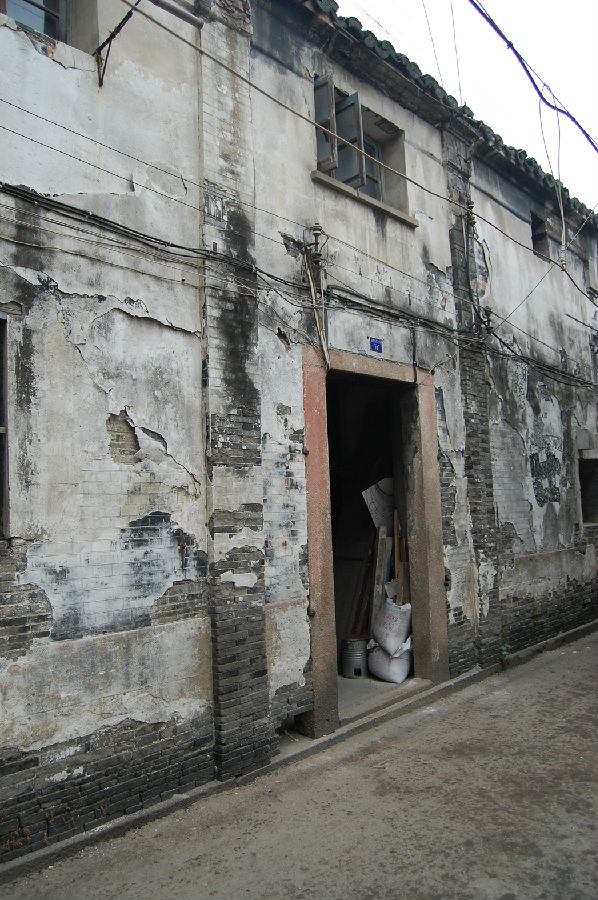

嘉兴市文物保护网 · 市级文物保护点 · 2022-05-16 · 原文

泰来当铺位于秀洲区新塍镇西北大街36号，建于清至民国时期。原为当铺，民国之后改为“地方浙江银行”。原布局不明，现仅存一进二层楼房，面阔10.54米，进深6.86米，占地面积72.3平方米。坐北朝南，硬山顶，木梁架结构，穿斗式。南立面当中写有墨色大字“地方浙江银行”，东侧斑驳墙面下露出斗大“当”字，南立面为灰白色砖墙，当中有石库门，墙头上刻有莲花纹砖雕，山墙用青砖砌筑。泰来当铺作为金融商贸建筑，在嘉兴同类文物中尚属首次发现，具有较高的历史和科学价值。2021年被公布为嘉兴市文物保护点。